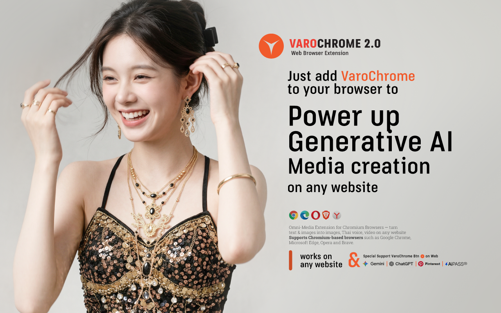

VaroChrome 2.0
Omni-Media Studio for Chromium Browsers

เชื่อมบัญชี Varoriya
ถ้าคุณล็อกอิน varoriya.com อยู่แล้ว กดปุ่มเดียวจบ — ระบบจะสร้าง
Key ให้อัตโนมัติ ไม่ต้องคัดลอก
ตัวเลือกขั้นสูง — ใส่ API Key เอง
สำหรับผู้ที่มี Generation API Key อยู่แล้ว (ขึ้นต้น varo_gk_)
โมเดลเริ่มต้น
ส่วนเสริมนี้เป็นเครื่องมืออิสระที่พัฒนาโดย Varoriya เพื่ออำนวยความสะดวกในการใช้งาน ไม่ใช่ระบบทางการของรัฐ และไม่มีส่วนเกี่ยวข้องอย่างเป็นทางการกับผู้ให้บริการใดๆ รองรับเบราว์เซอร์กลุ่ม Chromium (Chrome, Edge, Brave, Opera)